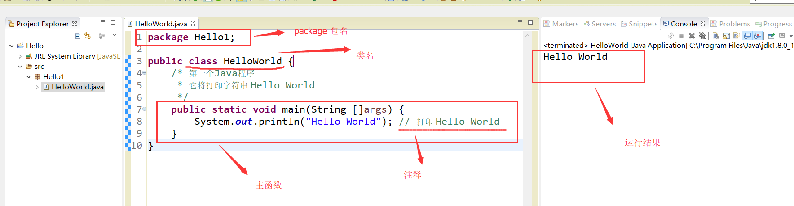
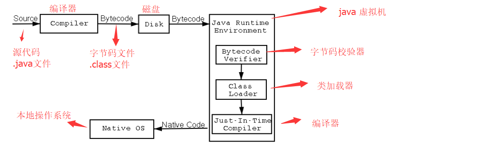

Java
java语言是一门面向对象程序设计语言
1. 开发环境配置：
百度一下
java语言的IDE工具：
- eclipse。
- Spring Tool Suite (STS)：spring团队创建的对eclipse工具的强化版。
- IDEA
以上几种工具，要学会使用其中一种。请自行百度。
注意：
下面所有示例主要用STS 运行java代码。
下面所有示例主要用STS 运行java代码。
2. 第一个java程序 ---helloworld ：
1. 使用命令行运行程序：
①：创建文件：HelloWorld.java
②：在文件中编写代码：
public class HelloWorld { /* 第一个Java程序 * 它将打印字符串 Hello World */ public static void main(String []args) { System.out.println("Hello World"); // 打印 Hello World } }
③：打开命令行窗口:
- 找到HelloWorld.java在那个路径下：
- 执行命令(假如文件在c盘下)：
C : > javac HelloWorld.java //编译文件，产生.class的字节码文件
C : > java HelloWorld //运行字节码文件，执行程序源代码
④：运行结果：

2. 使用IDE运行Java程序：
①：创建java project：

②：创建package包，class类

③：在类中编写源代码：
package Hello1; public class HelloWorld { /* 第一个Java程序 * 它将打印字符串 Hello World */ public static void main(String []args) { System.out.println("Hello World"); // 打印 Hello World } }
④：运行程序。（右键 --> RunAs --> Java application）

3. 第一个java程序解析：
源代码：
package Hello1; public class HelloWorld { /* 第一个Java程序 * 它将打印字符串 Hello World */ public static void main(String []args) { System.out.println("Hello World"); // 打印 Hello World } }解析：
-
package Hello1; //声明包名
-
class 关键字用于在java中声明一个类。
-
public 关键字是一个表示可见性的访问修饰符，它表示对所有人可见。
-
static是一个关键字,表示该方法为静态方法。main方法由JVM执行，因此它不需要创建对象来调用main方法。所以它节省了内存。
-
void是方法的返回类型，它意味着它不返回任何值。
-
main表示程序开始(执行的入口)。
-
public static void main(String []args) { ... }
所有的java程序都是由这个main方法开始执行的。
- String []args
String[] args是main函数的形式参数。当使用命令行运行程序时，可以用来获取命令行用户输入进去的参数。java 本身不存在不带String args[]的main函数,所以在程序中去掉String args[]会出现错误。
例如：
①：创建Test.java :
public class Test { public static void main(String[] args) { System.out.println(args[0]); } }
②：在命令行窗口中比如运行 Test.class 文件：
C : > javac Test.java
C : > java Test
③：运行结果：
Test
4. 程序运行时的内部细节（★★★）：

-
在编译时，java文件(.java)准换为字节码文件（.class），并将java代码转换为字节码.
-
类加载器(Classloader)：是用于加载类文件的JVM的子系统。
-
字节码校验器(Bytecode Verifier)：检查代码中是否存在错误代码。
5. 常见问题解答（★★★★★）：
1. 一个java源文件中可以有多个类吗？
可以，但只能有一个 public 类
2. JVM:
JVM(Java虚拟机)是一个抽象机器。它是一个提供可以执行Java字节码的运行时环境的规范。
字节码文件(.class)并不直接与机器的操作系统相对应，而是经过虚拟机间接与操作系统交互，由虚拟机将程序解释给本地系统执行。
因此，JVM屏蔽了与具体操作系统平台相关的信息，使得Java程序只需生成在Java虚拟机上运行的目标代码（字节码），就可以在多种平台上不加修改地运行。
JVM执行以下主要任务：
提供运行时环境(JRE) ---> 加载代码 ---> 验证代码 ---> 执行代码
3. JRE:
JRE是Java Runtime Environment的缩写。用于提供java程序运行时环境。它包含一组运行java程序库和JVM。
4. JDK：
JDK是Java开发工具包。
JDK包括了Java运行环境JRE、Java工具和Java基础类库。
2. java基础：
1. java代码的基本语法：
1. 基本格式与要点：
①：java中的所有程序代码都必须放在类中。可以大概理解为一个.java文件代表一个类
类的定义：
修饰符 class 类名{
程序代码;
}
②：编写java代码注意：
- java程序中每条语句都必须用分号（;）结束。
- Java是大小写敏感的，这就意味着标识符Hello与hello是不同的。
- java程序中，一句连续的字符串不能分开在两行写。要把两行用 + 号连起来。
System.out.println("this is a java 程序"); //这是错误示例 System.out.println("this is a"+ "java 程序"); //这是正确示例
- 类名的首字母应该大写。如果类名由若干单词组成，那么每个单词的首字母应该大写，例如 MyFirstJavaClass
- 方法名都应该以小写字母开头。如果方法名含有若干单词，则后面的每个单词首字母大写。例如 myFirstJava
- 源文件名(.java文件名)必须和公共类名（public class 类名）相同。
- 主方法入口:所有的Java 程序由public static void main(String []args)方法开始执行.
2. 注释：
Java支持单行以及多行注释。注释中的字符将被Java编译器忽略。
①：单行注释： 以 // 两个字符作为一行注释的开始.
②：多行注释： 它以 /* 开始，并以 */ 结束.
③：文档注释：看下例。在STS的快捷键：ALT + SHIFT +J
int a=10; //这是单行注释 /* int b=10; int c=10; 这是多行注释 */ /** * 文档注释，用于为代码编写帮助文档 * */注意：
-
多行注释 可以嵌套单行注释。
-
多行注释 不能嵌套多行注释。
3. 标识符：
java程序中，类名、变量名以及方法名等都被称为标识符。
关于Java标识符，有以下几点需要注意：
-
所有的标识符都应该以字母（A-Z或者a-z）,美元符（$）、或者下划线（_）开始。（不能以数字开头）
-
首字符之后可以是字母（A-Z或者a-z）,美元符（$）、下划线（_）或数字的任何字符组合
-
关键字不能用作标识符.
-
标识符是大小写敏感的
-
合法标识符举例：age、$salary、_value、__1_value
-
非法标识符举例：123abc、-salary
4. java 关键字：
这些关键字不能用于常量、变量、和任何标识符的名称。
所有的关键字都是小写的。


2. java 变量：
1.变量的定义：
int a=3; int b; int c=a+3;

int c=a+3;在内存中的表现是：程序首先取出变量a的值，与3相加后，把结果赋值给变量c。
2. 变量的数据类型：
-
在java中，定义变量时必须声明变量的数据类型。
-
为变量赋值时，必须赋予和变量相同类型的值。
-
变量的数据类型有8个。
整数类型（byte ， short ， int , long）
byte ：占1个字节（8位），范围：-128（-2^7）~ 127（2^7-1）
short ：占2个字节（16位），范围：-32768（-2^15）~ 32767（2^15 - 1）
int : 占4个字节（32位），范围: -2^31 ~ 2^31 - 1
long : 占8个字节（64位），范围：-2^63 ~ 2^63 -1
浮点数类型（float ， double）
字符型（char）
char : 最小值是 \u0000（即为0）；最大值是 \uffff（即为65,535）
布尔型（boolean）
boolean : 只有两个取值：true 和 false；

DEMO:
byte a = 100; short s = 1000; int a = 100000; long a = 100000L; float f1 = 234.5f; double d1 = 123.4; boolean one = true; char letter = 'A';